Workbench¶
DataOS Workbench is a web-based data exploration tool that allows you to run SQL queries on heterogeneous data sources simultaneously. It is backed by the Minerva query engine (built on top of Trino), hence it is ANSI SQL compliant. Workbench allows you to run simple & complex queries on all sorts of relational databases.
Upon opening the Workbench app, the first step is to select the Minerva cluster you wish to use. This cluster is committed to executing SQL scripts , and its selection is based on the specific computing requirements. The on-demand compute provisioning in Minerva enables you to meet the fluctuating computational requirements of your data assets. The availability of datasets for query is dependent on the inclusion of depots and catalogs within the Minerva cluster.
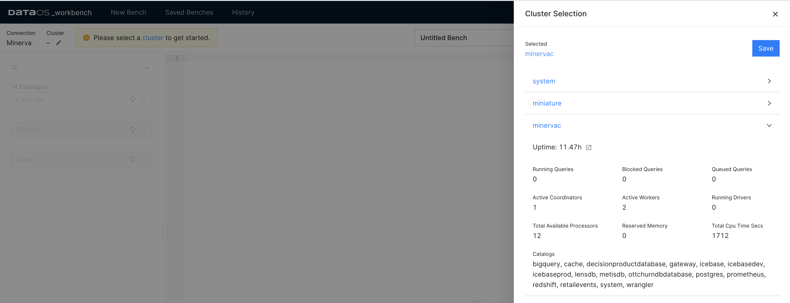
In the details of the Minerva cluster, one will see the names of the data sources that can be queried with that cluster. The Catalogs section includes the names of the depots and catalogs (data sources for which the depot has not been created, but which you can still query through DataOS). The datasets accessible for querying are dependent on the presence of depots and catalogs within the Minerva cluster.
The next step is to select the names of the Catalog, Schema, and Table where the data is located.
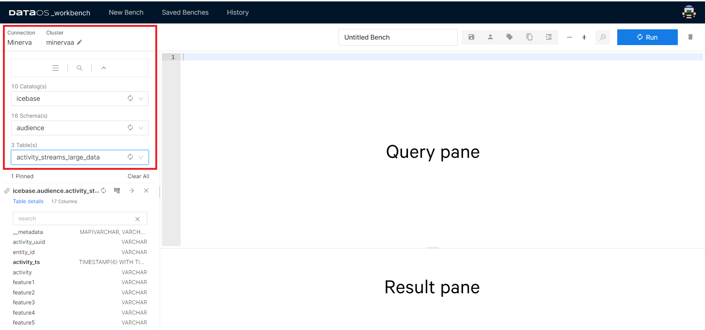
Once you select a table from the list of tables, its columns and data types appear on the screen. The mapping from source data to tables is defined by the connector. For relational databases, depot translates to Catalog in Workbench, while Collection to Schema, and Dataset to Table.
A fully-qualified table name such as icebase.audience.customers_large_data refers to the Table customers_large_data in the Schema audience which is in the Catalog icebase.
Query Pane is used to edit scripts, save them, and run scripts. When you run a SQL script, results are shown in the Result pane.
Now you are ready to start writing and running the queries. Workbench uses TrinoSQL syntax. If you need help getting started, refer to the syntax given for the commonly used queries:
Find the list of all the functions supported by Minerva.
Workbench Features¶
Studio Feature¶
The Studio feature is designed to streamline the process of writing complex and time-consuming SQL queries. With its intuitive interface, you can effortlessly generate SQL statements by selecting the desired Aggregates and Measures, or Raw Records and columns.
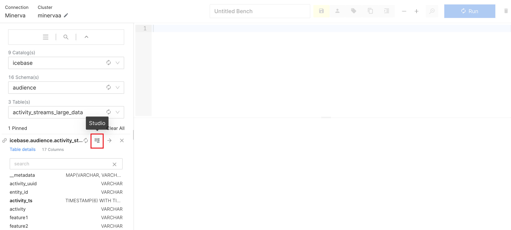
Now choose the fields per your intentions. Once done, click Generate SQL.
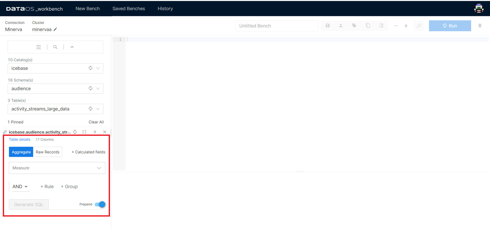
The prepend toggle allows you to keep the previous SQL statements in the query pane while generating the new statements. To remove previously generated SQL statements, disable prepend.
One can now directly export the results of the query to a BI tool. Refer to the Atlas section to learn more.
Atlas¶
Atlas is an in-built BI solution that is used to create customized reports/dashboards on any datasets with visualizations. In the result pane, hover over the three vertically aligned dots. Click it, and go to the Atlas option.

When you select the Atlas option, the pop-up will ask you for the query name. Type a name and click on Export it. It will immediately open Atlas in a new tab.
To learn more, click here : Link to Atlas.
Analyze¶
Use this feature to get the Query Plan. It gives you access to both the Raw Data as well as the DAG of the distributed query plan.
To analyze, select the entire query and click the magnifying glass with the lightning symbol on it (shortcut key: ctrl/cmd + shift + enter).
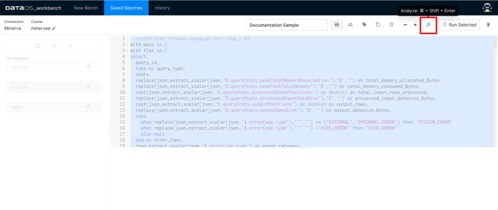
Clicking on the ℹ️ button will take you to the detailed Query Plan
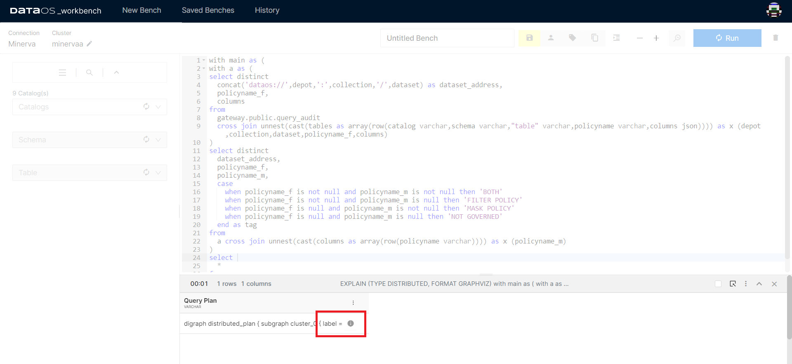
Runtime Stats¶
The Runtime Stats option appears while the query is still running. It will not be available once the query has been completed.
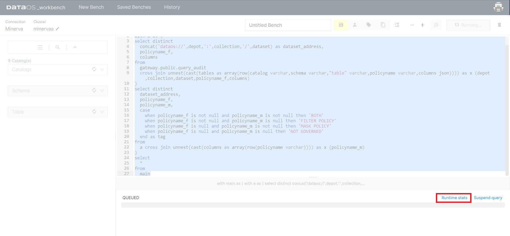
Clicking on the Runtime stats tab will take you to a new tab in the web browser that will hold vital information about the query you ran.
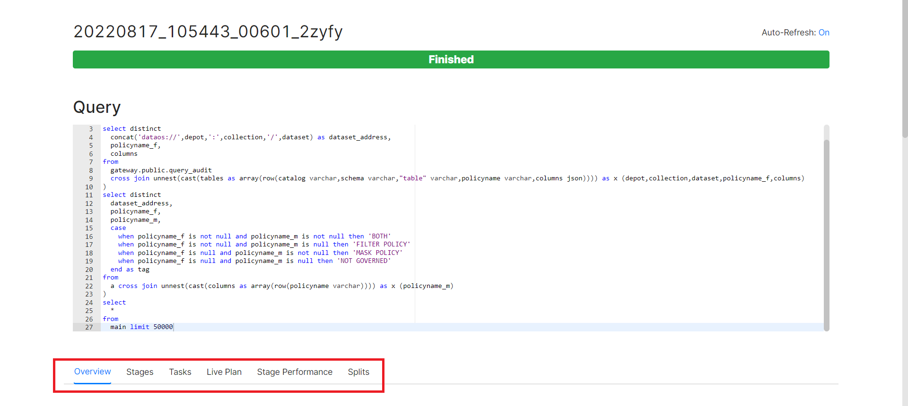
Overview
The overview section is further divided into four sub-sections - Session, Execution, Resource Utilization Summary, and Timeline.
Session tells you about the source of the query.
Execution will provide you with crucial information on the time taken to plan, analyse and execute the query, among other details.
Resource Utilization Summary not only tells you about the CPU & Memory usage but also holds information on the number of input/output rows and data.
Timeline holds the information on Parallelism and updates other details such as rows and bytes per second, as the query runs.
Stages
A query is executed by breaking up its execution into a hierarchy of stages. Each stage is designed to implement a different section of the distributed query plan. The output from these stages is aggregated into a root stage. The Minerva (query engine) coordinator is responsible for the modelling of the query plan into stages.
Detailed information regarding the query stages, which have been segmented to facilitate faster results, can be found here. This provides insights into the time and resources consumption for each section of the query.
Tasks
Each stage of the distributed query plan is implemented as a series of tasks. These tasks are distributed over a network of Minerva worker nodes.
Tasks themselves operate on Splits - check the Split section below. Upon execution of all the tasks, a stage is marked completed. Minerva assigns an ID to every task and tracks its progress on parameters like host, state, CPU time, and buffering details.
Live Plan
This will give you a graphical representation of the Tasks completed to execute the query. Starting from query input, analysis of the table, returning to the user with accurate output, to giving CPU and memory consumed to run the query. You can check this only after the query has completed running.
Stage Performance
Graphically represents each stage as a flowchart. The information here will be available only after the execution of the query.
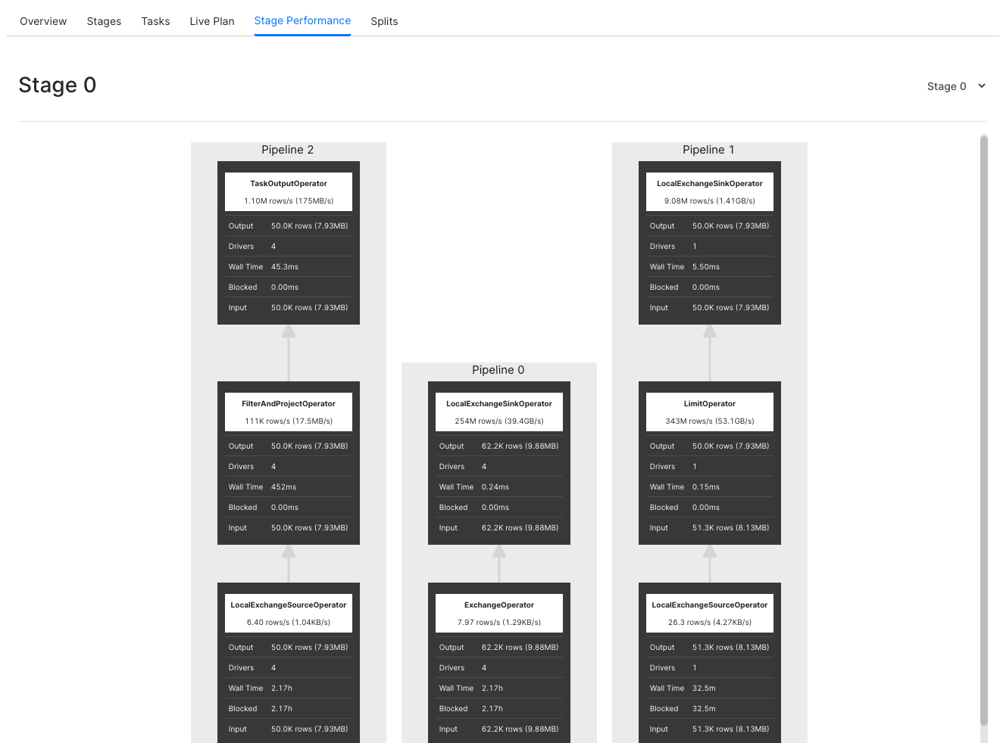
Splits
Splits are sections of a larger data set. Minerva coordinator retrieves a list of all the splits that are available for a table, through the connector for a particular Catalog. As mentioned earlier, Tasks operate on Splits, which is to say that at the lowest level Stages retrieve data via Splits.
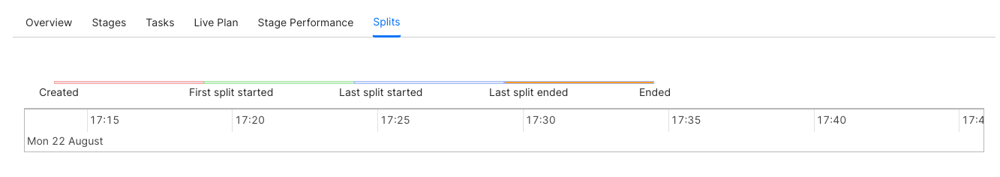
Query Details¶
The details of the query can be seen after it has run. Click the bar showing the result of a particular query.
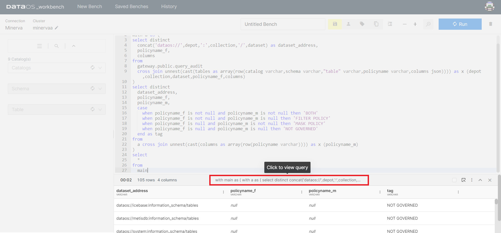
Query
The query which is just run will be displayed here.
Stats
Stats will give you information relating to the status of the query, query id, CPU time, processed rows and splits, among other things.
Governance
This will display all the policies that are applied to the dataset you have queried. If a governance policy has been applied to the table being queried, you will see the cautionary triangle in the result bar of the result pane.
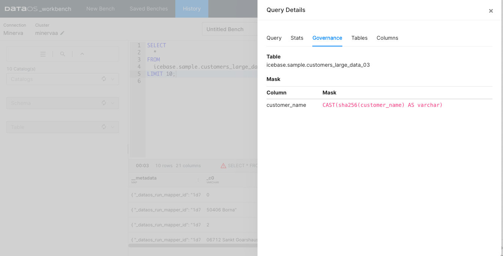
Data policies (mask and filter) can be created to guide what data the user sees once they access a dataset. To learn more, refer to Data Policies.
Tables
Tables will show you the fully qualified address of the input datasets. You can get more intricate and essential information on the table being queried in the Metis. Click on the arrow button on the right-hand side of the pop-up screen.
Columns
Here you can see the metadata of the output dataset.
Compare¶
Workbench interface allows you to compare the results of two queries without having to execute additional SQL statements to do this.
Select the two query results as shown in the image and click Compare option.
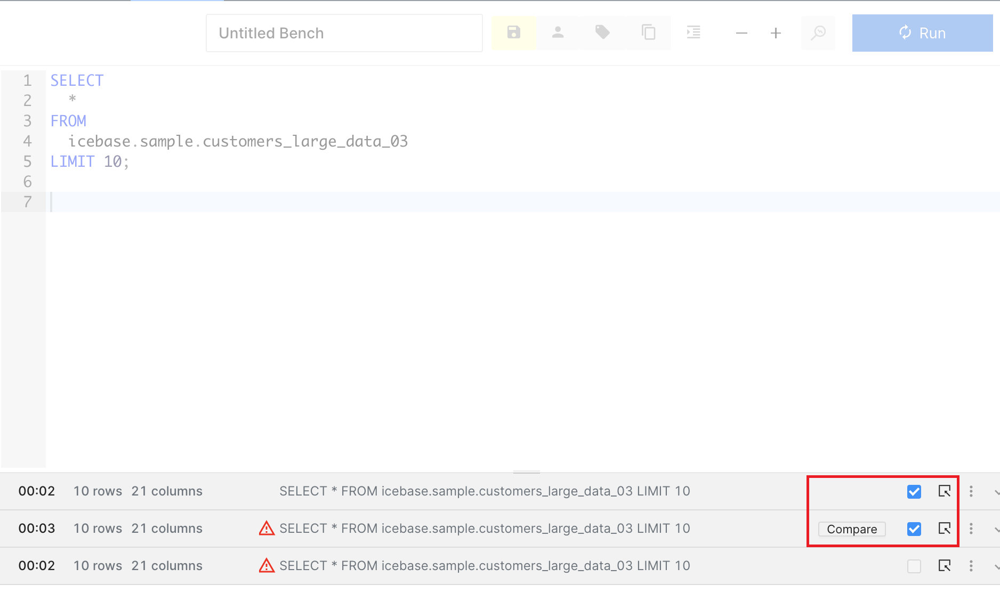
In the example shown, we have compared the results of two queries, one of them had customer names masked in the input dataset. Scroll each output dataset horizontally to compare specific columns.
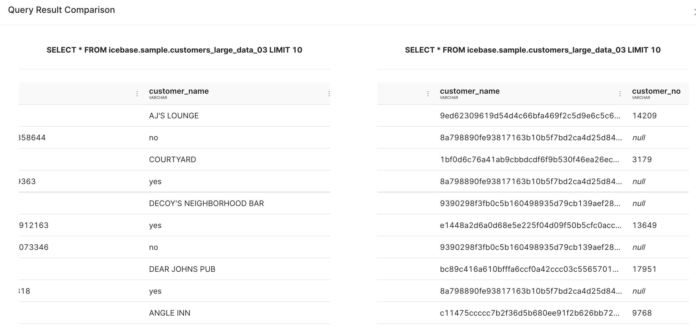
Pivot¶
With this intuitive interface, you can effortlessly rearrange and transform your data, enabling you to visualize and analyze it from different perspectives.
With DataOS workbench, you can pivot your output tables/datasets through a click-and-drag interface and rearrange and transform your data. This eliminates the need to manually write complex SQL statements for pivoting operations. Click the option for More, and go to the Pivot option.
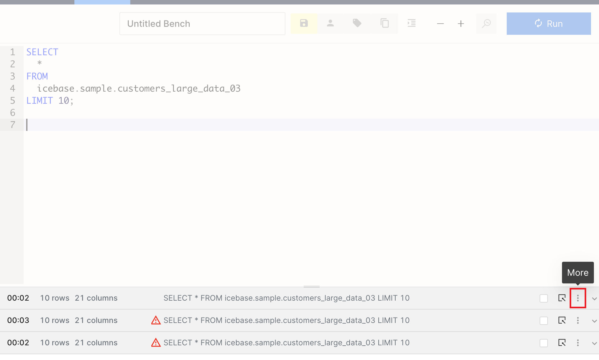
Pivot option opens up a new pop-up window where you can find all the columns (where at least one row doesn’t have the null value) listed at the top. Filters can be applied on each attribute visible in the list.
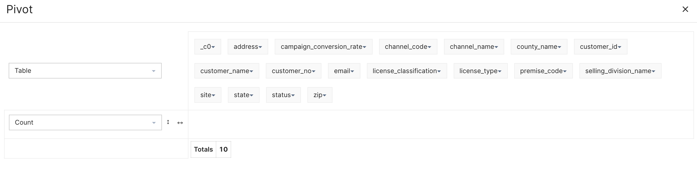
You can now pick and drop these attributes to the empty space as either row names or column names for a new table/dataset. In the example, we have picked ‘customer_no’ and ‘site’ as the row values, while ‘channel_code’ as the columnar values.
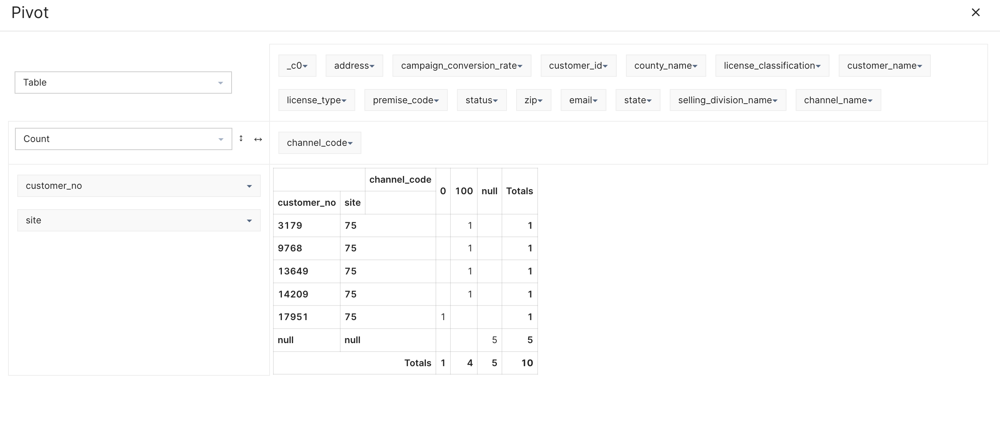
You can do a lot more in Pivot, such as create charts and heat-maps, perform aggregations, among other things.
Additional Features¶
There are lots of more features that make the Workbench interface user-friendly. Some of these features have been listed below.
History¶
This stores the SQL statements executed by you in the last 4 weeks.
Saved Benches¶
The saved SQL scripts appear in the Saved benches list.
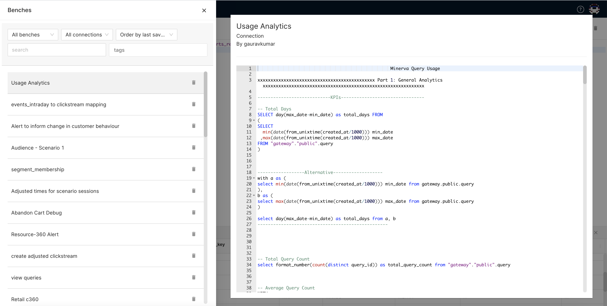
Private/Shared Bench¶
SQL statements that you save are available to you only. You can choose to share your SQL statements with other members of your enterprise. Simply save the bench, and click on the Private button to share a bench with other users.
Format¶
It rearranges/restructures the SQL statements so they are readable and legible to others.
Tags¶
It’s part of the best practice to declare tags for the saved benches, so they are searchable and discoverable later.